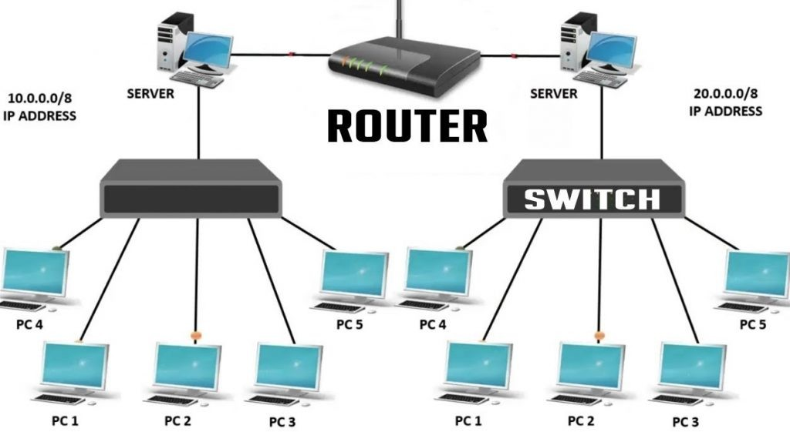
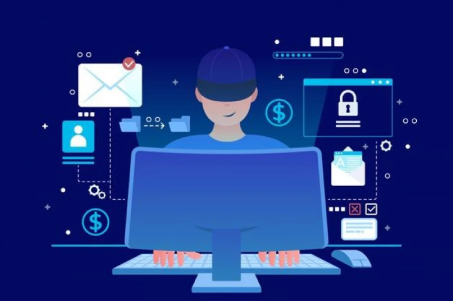

ARPANET
Al terminar la Segunda Guerra Mundial, las potencias Estados Unidos y la antigua Unión Soviética dejaron de ser aliadas y se enzarzaron en la llamada “Guerra Fría” A finales de los sesenta, la situación seguía bastante tensa y la entrada de los misiles intercontinentales habia introducido un nuevo factor. Era necesario detectar los misiles nada más ser lanzados y preparar el contrataque y solo se disponía de minutos, no de horas o de días. Era imposible que los humanos se encargaran de esa misión, la única forma de detectar los misiles era dejando que los ordenadores actuasen y, para ello, debían estar interconectados, comunicándose entre sí.
Asi en 1969 se estableció ARPANET, la primera red sin nodos centrales, de la que formaban parte cuatro universidades estadounidenses: Universidad de California Los Angeles (UCLA), Universidad de California Santa Barbara (UCSB), Universidad de Uta, Stanford Research Institute (SRI). La primera transmisión tuvo lugar el 29 de octubre de 1969, entre UCLA y SRI
Historia y evolución del internetDesarrollo del internet
ARPANET se convirtió en el núcleo de lo que posteriormente sería Internet, y también en una herramienta primaria en el desarrollo de la tecnología del momento. ARPANET evolucionó usando estándares del proceso RFC, aún usado actualmente para proponer y distribuir protocolos y sistemas de Internet.
1978 la Oficina de Correos británica, Western Union International y Tymnet colaboraron para crear la primera red de paquetes conmutados internacional; refiriéndose a ella como "International Packet Switched Service" (IPSS). Esta red creció desde Europa y Estados Unidos hasta Canadá, Hong Kong y Australia antes del 1981, y pocos años después, creó una infraestructura de conexiones mundial.
UUCP
En 1979, dos estudiantes de la Universidad de Duke, “Tom Truscott” y “Jim Ellis”, propusieron la idea de usar scripts simples en Bourne Shell para transefir noticias y mensajes entre su universidad y la cercana Universidad de Carolina del Norte. Después de la salida del software al dominio público, la red de hosts UUCP usada para noticias Usenet se expandió rápidamente. UUCPnet también creaba portales y vínculos entre Fidonet y los hosts de marcaje telefónico BBS. Las redes UUCP se distribuyeron rápidamente debido a su bajo coste y a su capacidad de usar las líneas alquiladas ya existentes.
TCP/IP
Por esta época había muchos métodos diferentes de conexionado, hacía falta algo para unificarlos. Robert E. Kahn había pensado en una reformulación fundamental, donde las diferencias entre los protocolos de red se escondían usando un protocolo de red común, y donde eran los hosts los encargados de ser fiables, y no la red. Con el rol de la red reducido al mínimo, se hizo posible juntar prácticamente todas las redes, sin importar sus características, resolviendo el problema inicial de Kahn. Este nuevo método se expandió rápidamente por las redes, y el 1 de Enero de 1983, los protocolos TCP/IP se hicieron los únicos protocolos aprobados en ARPANET, sustituyendo al anterior protocolo NCP.
NSFNet
Después que ARPANET estuviera funcionando por varios años, ARPA buscó otra agencia para ceder la red de ordenadores; la tarea primaria de ARPA era impulsar investigaciones y desarrollos, no manejar un servicio público de comunicaciones Julio de 1975, la red se cedió a la "Defense Communications Agency" que también era parte del Departamento de Defensa. En 1984, la porción militar de ARPANET se dividió como una red separada, la MILNET..
Las redes basadas alrededor de ARPANET eran pagadas por el gobierno y por tanto restringidas a usos no comerciales tales como investigación; el uso comercial estaba estrictamente prohibido. Otra rama del gobierno, la National Science Foundation (NSF), se volvió fuertemente involucrada en investigación en Internet y empezó un desarrollo como sucesor de ARPANET. En 1984 esto resultó en la primera red de banda ancha diseñada específicamente para usar TCP/IP.Esto creció como “NSFNet” establecida en 1986, para conectar y proveer acceso a una cantidad de supercomputadores establecidos por la NSF.INTERNET
ARPANET empezó a fusionarse con NSFNet, originando el término Internet, "La Internet" significaba una red global y muy grande que usaba el protocolo TCP/IP, y que a su vez significaba NSFNet y ARPANET. Como el interés en la expansión de las conexiones creció, y aparecieron nuevas aplicaciones para ello, las tecnologías de Internet se esparcieron por el resto del mundo. En 1984, University College London reemplazó sus vínculos por satélite transatlánticos por TCP/IP por medio del International Packet Switched Service (Servicio Conmutado de Paquetes Internacional). Varios sitios que no podían conectarse directamente a Internet empezaron a hacerlo por medio de simples portales para permitir la transferencia de correo electrónico, Esos sitios con sólo conexiones intermitentes usarían UUCP o Fidonet, y confiarían en los portales entre esas redes e Internet. Algunos servicios de portales fueron más allá ofreciendo servicios como el acceso a sitios FTP a través de UUCP o e-mail.
Desarrollo del InternetWeb
Tim Bernes-Lee comienza en el CERN en 1989, a él se deben los tres elementos que fueron clave en el nacimiento de la Web (World Wide Web).
HTML como lenguaje para crear los contenidos de la Web, basado en Standard Generalized Markup Language (SGML).
HTTP como protocolo de comunicación entre los ordenadores de la Web, en cargado de la transferencia de las páginas web y demás recursos.
URL como medio de localización (direccionamiento) de los distintos recursos en Internet. Los acontecimientos más importantes en el nacimiento de la Web se remontan a los años cuarenta
El primer Navegador
El primer navegador web, que también era editor, fue programado por Tim Berners Lee a finales de 1990. Al principio lo llamó World Wide Web, pero después cambió el nombre por Nexus, ya que empezaba a usarse World Wide Web para referirse de forma genérica al sistema de comunicación que había ideado.
La WebEstructura y componentes de internet
La estructura de Internet se basa en hardware, software y protocolos que permiten la comunicación entre dispositivos y la transmisión de datos
Servidores:Los servidores de internet son máquinas (hardware) y software que actúan como la columna vertebral para la entrega de contenido y servicios a través de la red. Reciben solicitudes de los clientes y responden enviando la información solicitada.
PROTOCOLOS
Son un conjunto de de reglas que regulan la comunicación entre los dispositivos (TCP/IP)TCP (Transmision Control Protocol)(Protocolo de Control de Transmisión) IP ( Es un número que permite identificar a un dispositivos conectado a la red)
 ComponnentesServicios y Aplicaciones del internet
Comunicación
A través de Internet, es posible realizar muchas operaciones y actividades, ya que son muchos los servicios que ofrece la red.
Buscadores
Nos permiten ubicar determinadas páginas utilizando una combinación de palabras clave y signos. El usuario introduce los términos en los que está interesado y el buscador efectúa una búsqueda en sus bases de datos para encontrar aquellas páginas en las que aparecen dichos términos, ofreciéndole la posibilidad de enlazar directamente con cada página. También es posible encontrar información a través de directorios sobre materias específicas.
Mensajeria
Correo Electronico
El correo electrónico es, junto con el WWW, uno de los servicios más utilizados en Internet. Consiste en el intercambio de mensajes, entre dos o más usuarios, que utilizan la red como plataforma.
Chats
Los chats son aplicaciones que permiten la comunicación en tiempo real entre usuarios a través de texto, voz o video. Estas plataformas han ganado popularidad debido a su capacidad para facilitar conversaciones instantáneas y interactivas.
Plataformas
Redes Sociales
Plataformas para conectar con amigos, familiares y otros usuarios, compartir contenido y participar en comunidades. Ejemplos de ellos son: Facebook, Twitter e Instagram.
Plataformas de Entretenimiento
Estas plataformas ofrecen contenido multimedia, como videos, música y juegos, para el disfrute de los usuarios. Ejemplos incluyen YouTube, Spotify y Netflix.
Búsqueda
Los motores de búsqueda son herramientas que permiten a los usuarios encontrar información en la web. Utilizan algoritmos para indexar y clasificar páginas web, facilitando el acceso a contenido relevante (Google, Bing, DuckDuckGo.)

Seguridad en internet
La seguridad en internet son todas aquellas precauciones que se toman para proteger todos los elementos que hacen parte de la red, como infraestructura e información, que suele ser la más afectada por delincuentes cibernéticos. La seguridad informática se encarga de crear métodos, procedimientos y normas que logren identificar y eliminar vulnerabilidades en la información y equipos físicos, como los computadores. Este tipo de seguridad cuenta con bases de datos, archivos y equipos que hacen que la información importante no caiga en manos de personas equivocadas
Riesgos en el Internet
Robo de información
Daño de información
Ataques a sistemas o equipos
Suplantación de identidad
Venta de datos personales
Robo de dinero
Seguridad en dispositivos
Protege computadoras, smartphones, tablets con Antivirus, firewalls, actualizaciones de software.
Seguridad en redes
Defiende las conexiones de Internet (Wi-Fi, datos móviles) contra intrusos con VPN, cifrado WPA3 en routers, detección de intrusos.
Seguridad de Datos
Protege la información sensible mediante cifrado, control de acceso y copias de seguridad.
Seguridad en Aplicaciones y Navegación
Utiliza autenticación de dos factores, actualizaciones regulares y navegación segura (HTTPS).
Como Prevenirlo?
Implementar medidas de seguridad, educar a los usuarios y mantener sistemas actualizados. Mantener activados y actualizados los antivirus en nuestros dispositivos con conexión a internet, evitar realizar operaciones financieras en redes abiertas o computadores públicos y verificar los archivos adjuntos de mensajes de desconocidos y evitar descargarlos si no se tiene plena seguridad de su contenido.
Nuevas tecnologias emergentes
Las nuevas tecnologías emergentes son innovaciones que están en desarrollo o que han sido recientemente introducidas y que tienen el potencial de cambiar la forma en que vivimos y trabajamos. Estas tecnologías a menudo se basan en avances en áreas como la inteligencia artificial, la biotecnología, la nanotecnología y la computación cuántica.
Ejemplos de tecnologías emergentes
- Inteligencia Artificial (IA)
- Realidad Aumentada (RA) y Realidad Virtual (RV)
- Internet de las Cosas (IoT)
- 5G y conectividad avanzada
La IA se refiere a sistemas informáticos que pueden realizar tareas que normalmente requieren inteligencia humana, como el reconocimiento de voz, la toma de decisiones y la traducción de idiomas.

La RA y la RV son tecnologías que superponen información digital en el mundo real o crean entornos virtuales inmersivos, respectivamente.
El IoT se refiere a la interconexión de dispositivos y objetos a través de Internet, permitiendo la recopilación y el intercambio de datos.
La 5G es la quinta generación de tecnología de red móvil, que promete velocidades de conexión más rápidas, menor latencia y la capacidad de conectar un mayor número de dispositivos simultáneamente.